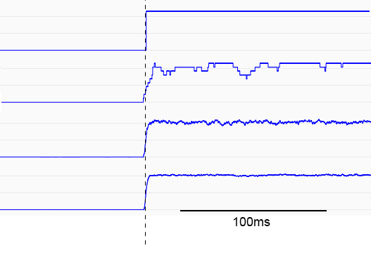
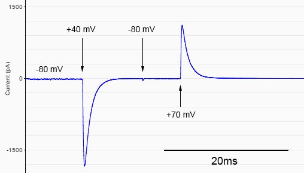

Documentation
Table of Contents
Hello there! Whether you're a student, a professor, or just a curious passerby, I hope this guide will come in handy. Having some background in electrophysiology will help of course, but feel free to read through nonetheless - or skip to the developer notes if you are more interested in my thoughts on the project as whole.What is this?
This is a voltage clamp simulator. It replicates one of the most useful experimental techniques developed in the late 1940s to study excitable biological membranes. This technique was most famously used to construct the Hodgkin-Huxley model, which is fundamental to our understanding of action potential propagation in neurons.The purpose of a voltage clamp is to control the voltage across a cell membrane while simultaneously recording the movement of charged ions though different types of ion channels. Actual experiments require expensive equipment and trained personnel, but we can make use of simulations to give us a basic understanding of the technique and what can be gained from it.
Early experiments involving the squid giant axon allowed us to observe the behaviour of macroscopic current - the summation of ion flow through entire populations of channels between the inner and other compartments of a cell. It was found that this type of current can be modeled using a generalized equation, such as that seen below for potassium current from a tetrametric voltage-gated delayed-rectifier (Fig 1):

Here, several variables dictate the behaviour of these channels observed at the macroscropic scale, including maximum conductance (g DR), opening (α) and closing (β) rate constants, a time constant (τ), membrane voltage (Vm), and Nernst potential (EDR). The entire system is treated as deterministic, or responding predictably over time. However, it is worth noting that from the above list we only really have control over two parameters: the membrane voltage and the Nernst (reversal) potential.
Ion channels can also be modeled using a stochastic approach. This was my choice for the simulator. Since we know that any single channel may transition between one of many closed, non-conducting states and an open, conducting state, they can be reduced to continuous-time discrete-state Markov chains, under the two assumptions that these channels 1) are memoryless, and 2) operate independently. Armed with empirically determined formulae for opening and closing rate constants, we can use any pseudo-random number generator to closely simulate a channel's kinetic scheme, as shown below (again for a voltage-gated K+ channel) (Fig 2):
For any single channel, n0-3 represent closed states, and n4 the open state. By closely approximating the probability of each of these transitions, we can now simulate each channel individually rather than as a part of a population. For a more in-depth look at this approach, see this paper by Mino et al.
Usage
Fortunately, Hodgkin and Huxley's seminal experiments have provided us with some very useful equations for determining rate constants for both potassium and sodium channels found in the squid giant axon. These are the only two channels I have included for you to play around with, but it should be noted that given sufficient experimental data, any simple channel could be implemented.Starting with the left module, we have two buttons, labeled 'Y-' and 'Y+', for zooming out and in, respectively, along the y-axis. The scale of electrical current will also change, from femto- up to nano- amperes.
The middle module contains the 'recording'. Time is located along the x-axis, and the current will 'move' from left to right as you perform a recording. At about 80% of the way, the entire trace will start shifting, in order to maintain 'head' of the trace in the same x-position.
In the upper-right module we have the controls (and associated hotkeys):
- Play/Pause [P]: Starts or stops the experiment.
- Record: Not yet implemented. Will allow experimental data to be saved.
- Reset [R]: Restores default settings and clears the experiment.
- Settings [S]: Opens up the configuration menu:
- dT (Real-time frame duration) - the amount of 'simulated time' spent on one frame. Units are in microseconds. Note that because the framerate is set to (and capped at) 60 frames per second, the default setting (100 μs) will cause the experiment to run approximately 167 times slower than real-time, although this will of course depend on the speed of your machine and the desired number of channels you wish to simulate. If you would like to perform an experiment in real-time, simply set this value to 16,666 μs - however, note that this will significantly increase computational demand and, in my opinion, will not yield very interesting results.
- NK/NNa (Number of potassium/sodium channels) - recommended between 0 to 50,000, or more if your computer can handle it.
- γK/γNa (Potassium/sodium single-channel conductance) - electrical conductance (R-1) of a single potassium or sodium channel. Units are in picosiemens.
- [K+/Na+]o/i (Extracellular/intracellular potassium/sodium concentration) - determines the reversal potential. Units are in millimolar. By default, these have been set to the amounts used in Hodgkin and Huxley's squid giant axon experiments.
In order to edit the settings, click the Edit button. When you are finished, click Done. The experiment cannot be started until you click Done. Likewise, you cannot change the settings if the experiment has been started. Some settings may be edited if the recording is paused, however, in order to enable all settings you must reset the experiment.
Below the controls is the voltage setter. By default, the membrane holding voltage has been set to -80 mV. To change it, enter in a new value and click Step, or press enter. There is no clamp delay; the changes will be reflected immediately. Note that this can be done whether the experiment is in progress or if it has been paused. In the latter case, when the experiment is resumed, the simulator will step to whichever voltage was most recently set.In the lower-right module you will find some other useful information in two tabs. In the Stats tab we have:
- Vm - Transmembrane voltage (mV).
- EK/Na - Equilibrium potential for potassium or sodium (mV). Depends (only) on the intra/extracellular ion concentration.
- dT - Elapsed time for the experiment (ms).
- α/βn/m/h - Opening and closing rate constants for potassium and sodium channels, using Hodgkin & Huxley's naming conventions (s-1).
- I - Measured current (pA).
Running a simple experiment
While nothing prevents you from mixing the two channels together in your experiment, I would highly encourage trying each one individually to see how they behave (which they should, very predictably, as in the literature). With a time step (by default) that is much, much slower than real-time, you will be able to see several interesting things - particularly the kinetics of channel opening/closing.One of the benefits of modeling ion channels as stochastic processes is the ability to simulate single-channel (or very few, as in single-digit) activity. At certain voltages, the 'flickering' behaviour seen in many channels can be recreated. The following experimental trace was recorded from 4 potassium channels held at -20 mV (Fig 3):

From above, we can see that 1) each channel contributes a fixed amount to the overall membrane conductance, 2) transitions between closed and open states are, for all intents and purposes, instantaneous, and 3) if you observed the state tracker during the experiment you would see that the channels conduct only in their open state and not in any of their closed states.
Let's say you wanted to recreate something more along the lines of what a deterministic equation would produce: current that follows clear exponential growth as in Figure 1 above. All you have to do is increase the channel number. Unless you are running the simulation on a potato, you should be able to achieve something that looks very close to the deterministic case. The following traces were recorded from 1, 10, 100, and 1000 potassium channels held at -80 mV and then stepped to +40 mV (Fig 4):

The same can be done with sodium channels. The following trace (with voltages directly labeled) was recorded from 16,000 channels (note that the frame duration has been slowed to 20 μs) (Fig 5):

Two important things to note from above: 1) by slowing down the frame duration even further (now over 800 times slower than real-time), we can very clearly see activation and inactivation kinetics as described in Hodgkin and Huxley's equations, and 2) the reversal potential for sodium (~55 mV) and its role on the difference in magnitude (and direction) of the driving force between the two step voltages (+40 and +70 mV).
Developer notes
The major drawback of stochastic ion channel simulations is speed. Initially, the easiest way to mimic individual channels is a brute-force approach: Since the rate constant (s-1) represents the expected number of transitions (forward or reverse) per second for a single channel, given some finite time step (here we see the purpose of our real-time frame duration parameter from above) we can calculate the probability that a channel flips from one state to another by a simple multiplication. Assuming uniformly distributed pseudo-random numbers, this method will allow us to effectively simulate any number of channels as long as the time step is sufficiently small (such that the transition probability per unit time is much less than 1). However, this method is very slow - although the time complexity is only O(n), the algorithm simply does not scale well when we want to have very large numbers of channels (>> 1m), which is not uncommon in certain biological systems (such as the Xenopus oocyte).A more efficient method, known as the CNT algorithm, was developed by Gillespie in 1977. Originally used to simulate coupled chemical reactions, the algorithm was later adapted for modeling membrane activity in neurons (also described in-depth in the above linked paper by Mino et al.). In contrast to the brute-force method, this approach uses a probability density function to calculate the time until the next transition. Essentially, the algorithm can be broken down into two steps: 1) calculating the time that will elapse until the next transition and 2) updating the number of channels in each state. Instead of deciding whether to change state for each of n channels at every time step, we perform transitions one at a time and calculate the appropriate waiting time on-the-fly. But here's the important part: although our upper-bound is still O(n) (the case where every single channel switches state in a single frame), the expected runtime is much less, because the number of transitions occurring between each time step is usually much less than n. However, it should be noted that delays can still be expected during very large voltage steps, when large numbers of channels open or close in a short period of time. See here for a more detailed discussion.
I wrote the simulation in javascript, mostly for accessibility/compatibility (although it does require you to use a browser supporting HTML5). No external frameworks were used - I considered using some sort of charting library, but most of them seemed a bit too fancy/heavy for the task (I just needed to draw a one-pixel width line on a graph). For now, the basic canvas drawing tools suffice and replicate what you would see in real software such as Clampex.
Future directions
In its current state, the simulator works and can be used to do several proof-of-concept demonstrations. I haven't found the time add all the functions of a real voltage clamp (in particular, the ability to perform current clamp). Also, you can probably see that there is a 'record' button but no recording feature, but there are means to add this, since the data is in fact saved (albeit currently in a simple dynamic array - probably not the best choice).As a disclaimer, this was a side project that I worked on in my spare time and is therefore relatively unmaintained and will almost certainly contain bugs. However, if you are an instructor interested in seeing this become a meaningful learning tool, know that I'd be happy to expand the functionality if you wish to use it for teaching. My contact info can easily be found on my main page, so don't hesitate to get in touch with me. Also, I am by no means an expert in the field, so all feedback is encouraged, and most definitely appreciated!
Acknowledgments
I owe everything I've learned about electrophysiology over the years to my lab supervisors Harley Kurata and Stephan Pless, and my neurophysiology profressor Steve Kehl. Many thanks for their support!The interface uses the Lumen theme from Bootswatch.